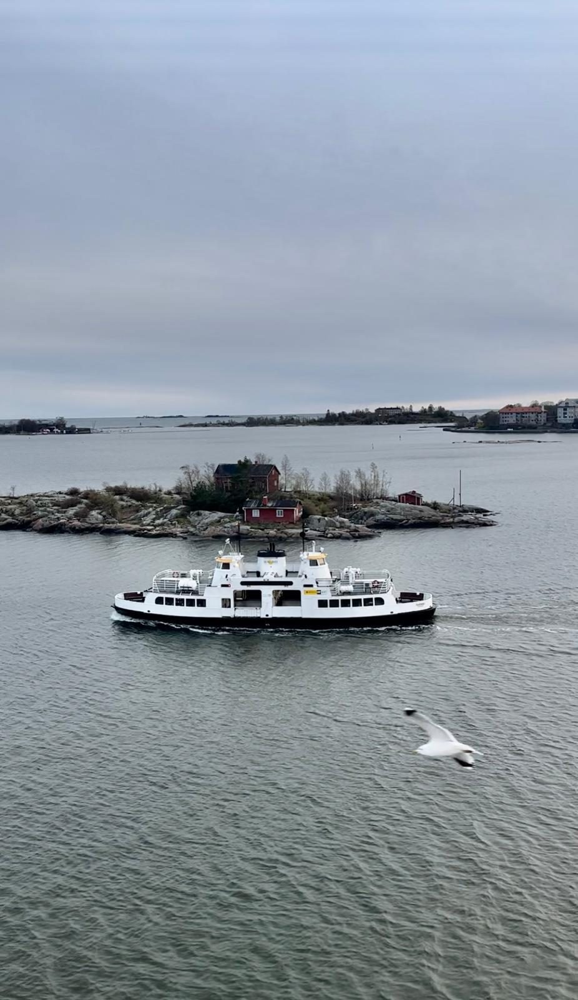
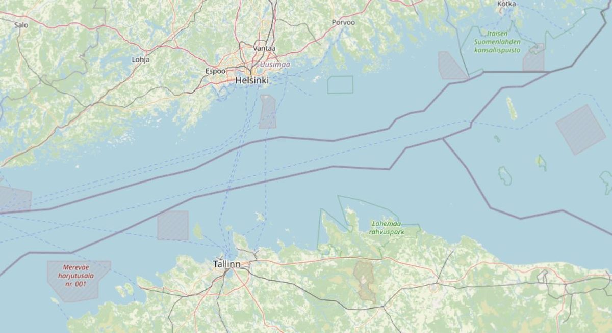

Research · Group project · 2025
Two Branches of the Same Tree: Rethinking the Helsinki-Tallinn Twin City Strategy
How is the relationship between the two capitals perceived from above and below?
Abstract
This project examines the Helsinki-Tallinn twin city strategy through the lens of planning practices and everyday mobilities. Despite strong political narratives promoting cross-border integration, the research reveals a disconnect between strategic ambitions and lived experiences. Using document analysis, expert interviews and ferry-based interviews, the study identifies asymmetries in planning priorities, economic power and cultural engagement, and argues for a more plural and practice-oriented understanding of the twin city relationship.


Methods
The project employed a qualitative, multi-method research design to analyse the Helsinki-Tallinn twin city strategy. Eight policy and planning documents were analysed to understand official narratives and strategic goals. Five expert interviews with planners and policy actors in both cities provided insight into institutional perspectives and governance priorities. 34 semi-structured interviews conducted aboard ferries captured everyday mobility practices and user perceptions. This ferry-based fieldwork allowed the project to observe cross-border mobility as a lived social practice. The analysis was guided by the concepts of soft spaces, urban identity and Lefebvre's theory of spatial production. Together, these methods enabled a comparison between conceived planning spaces and everyday experiences.
Implications & Personal Learning
The findings suggest that twin city strategies risk remaining symbolic when they are not grounded in everyday practices and institutionalised forms of interaction. The Helsinki-Tallinn relationship is characterised by asymmetries, with Tallinn relying more heavily on the twin city narrative than Helsinki. This highlights the need for more flexible and plural policy framings that acknowledge differing interests and identities. Practical implications include strengthening cultural exchange mechanisms beyond transport infrastructure and recognising distinct urban identities within integration strategies.
Through this project, I learned how mobility-based fieldwork can reveal gaps between planning discourse and lived experience. I also developed a stronger understanding of cross-border governance and identity formation. Personally, the project sharpened my ability to integrate theory, qualitative methods and critical spatial analysis in complex urban contexts.
Interested in the full report or in cross-border planning? I am happy to share it.
Write me: lennart.reichow@gmail.com